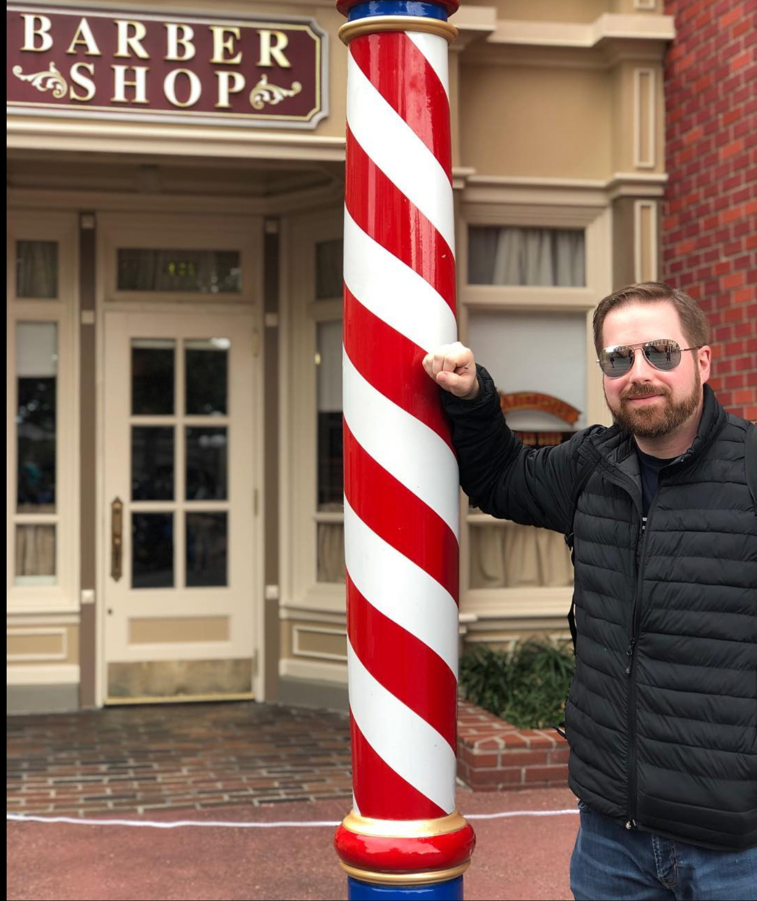

My name is James Groover, but my friends all call me Jay. I was born and lived most of my life in the small town of Statesboro, Ga. I graduated from Bulloch Academy and attended GSU for 4 years. I managed the local steakhouse for 12 years, R.J.'s. It was during this time that I met my wife, Kellie. She managed the local Blockbuster. We were engaged after only two months and after a two year engagement we were married. We welcomed our first son, Noah into the world 7 years later. We later welcomed our second son Ethan. My family is the most important thing to me. They are the reason that I am taking this challenging course. I hope to be able to spend more time with them and to be home more to help raise our two boys.
I currently work as a sales consultant at Havertys furniture. Havertys is a great place to work and full of fun and interesting people. Everyday at work I am confronted with a new and interesting challenge to better serve our guest. We treat every customer like they are a guest in our home when they enter the front door. I have never worked for a place that cares more for the customers that walk through the front door.
I'm a bit of a nerd and love sci fi, Marvel, Star Trek and especially Star Wars. I am very lucky to be married to my best friend who shares these same interest. I am also very lucky to have the support of my family. I know that there are many new challenges ahead and I am ready to take them all on!